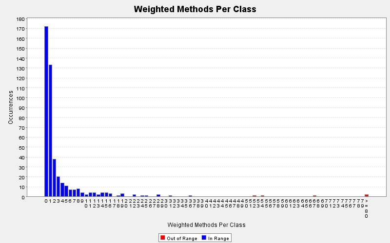

Produced by State Of Flow Eclipse Metrics on Mon Aug 01 12:23:34 CEST 2016
|  |
|
| CC (max) |
FE (max) |
LOCm (max) |
NLS (max) |
NOL (max) |
NOP (max) |
NOS (max) |
Ce | LCOM-CK | LCOM-HS % | LCOM-PFI % | LCOM-TC % | NOF | WMC | Line | Type | Package |
|---|---|---|---|---|---|---|---|---|---|---|---|---|---|---|---|---|
| 36 | 4 | 124 | 27 | 10 | 5 | 289 | 65 | 95 | 94 | 80 | 1337 | 32 | 120 | 77 | ViewBoard | com.luke.clones.model |
| 40 | 4 | 97 | 0 | 10 | 9 | 264 | 75 | 81 | 94 | 76 | 1415 | 33 | 106 | 93 | ViewBoardOnline | com.luke.clones.model |
| 25 | 4 | 73 | 0 | 8 | 4 | 141 | 95 | 0 | 83 | 75 | 1418 | 21 | 67 | 100 | ScreenOnline | com.luke.clones.screen |
| 9 | 0 | 13 | 0 | 8 | 4 | 27 | 9 | 0 | 48 | 60 | 177 | 4 | 54 | 30 | LogicBoard | com.luke.clones.model |
| 7 | 5 | 33 | 0 | 7 | 3 | 64 | 23 | 170 | 91 | 93 | 360 | 16 | 52 | 48 | QuickMessage | com.luke.clones.messages |
| 5 | 4 | 23 | 0 | 5 | 2 | 38 | 29 | 0 | 83 | 80 | 726 | 14 | 36 | 58 | ScreenMapCreator | com.luke.clones.screen |
| 7 | 0 | 33 | 3 | 6 | 2 | 52 | 39 | 25 | 93 | 74 | 548 | 16 | 31 | 62 | ScreenOnlineLogin | com.luke.clones.screen |
| 7 | 1 | 36 | 3 | 4 | 2 | 73 | 35 | 5 | 85 | 54 | 799 | 13 | 28 | 64 | ScreenOnlineServerSelection | com.luke.clones.screen |
| 2 | 0 | 18 | 0 | 2 | 3 | 18 | 29 | 191 | 94 | 75 | 347 | 16 | 28 | 40 | StartScreen | com.luke.clones.screen |
| 7 | 0 | 16 | 3 | 6 | 2 | 22 | 20 | 0 | 84 | 74 | 457 | 11 | 25 | 44 | ProductionTest | com.luke.clones.test.production |
| 11 | 1 | 17 | 0 | 5 | 1 | 36 | 8 | 0 | 0 | 0 | 0 | 1 | 24 | 30 | TurnStats | com.luke.clones.model |
| 7 | - | 17 | 0 | 7 | 1 | 22 | 4 | - | - | - | - | 0 | 22 | 27 | ConfigUtils | com.luke.clones.config |
| 8 | 0 | 15 | 0 | 3 | 2 | 18 | 16 | 0 | 25 | 40 | 7 | 2 | 22 | 27 | FieldError | com.luke.clones.form.validation |
| 10 | - | 27 | 0 | 7 | 3 | 39 | 13 | - | - | - | - | 0 | 19 | 35 | AutoGameUtil | com.luke.clones.autogame |
| 4 | 0 | 8 | 1 | 3 | 0 | 18 | 14 | 0 | 53 | 68 | 164 | 5 | 19 | 35 | MusicManager | com.luke.clones.music |
| 6 | 1 | 10 | 1 | 5 | 2 | 13 | 12 | 0 | 78 | 80 | 377 | 8 | 19 | 36 | RoomCreateRemoveTest | com.luke.clones.test.production.implementation |
| 20 | 18 | 90 | 26 | 4 | 0 | 184 | 15 | - | - | - | - | 0 | 18 | 708 | ViewBoardOnline$(anonymous) | com.luke.clones.model |
| 8 | 0 | 42 | 0 | 4 | 5 | 58 | 11 | 18 | 94 | 87 | 284 | 9 | 16 | 37 | StatusBar | com.luke.clones.model.button |
| 4 | 0 | 11 | 0 | 2 | 2 | 13 | 13 | 0 | 63 | 55 | 495 | 6 | 16 | 42 | ScreenLocalMultiplayerGame | com.luke.clones.screen |
| 4 | 0 | 15 | 0 | 2 | 3 | 18 | 14 | 0 | 66 | 57 | 495 | 6 | 16 | 38 | ScreenOnlineGame | com.luke.clones.screen |
| 7 | 0 | 13 | 0 | 5 | 7 | 32 | 7 | 0 | 86 | 61 | 252 | 4 | 15 | 33 | FieldActor2 | com.luke.clones.model.actor |
| 3 | 0 | 8 | 0 | 3 | 3 | 11 | 12 | 0 | 71 | 60 | 325 | 7 | 15 | 45 | FlashingTextButton | com.luke.clones.model.button |
| 6 | 2 | 11 | 0 | 5 | 4 | 11 | 7 | 6 | 88 | 94 | 106 | 4 | 15 | 28 | AchievementType | com.luke.clones.network.communication |
| 4 | 1 | 14 | 0 | 2 | 2 | 29 | 21 | 1 | 80 | 70 | 451 | 8 | 15 | 46 | ScreenSettings | com.luke.clones.screen |
| 4 | 0 | 7 | 0 | 2 | 4 | 7 | 5 | - | - | - | - | 0 | 14 | 28 | SpecialKeyHandler | com.luke.clones.model |
| 6 | 0 | 12 | 0 | 4 | 2 | 20 | 6 | 0 | 25 | 40 | 7 | 2 | 14 | 28 | Turn | com.luke.clones.model.type |
| 6 | 0 | 12 | 0 | 2 | 2 | 14 | 3 | 0 | 33 | 50 | 12 | 2 | 14 | 25 | PlayerMoveTimeLimit | com.luke.clones.network.communication |
| 18 | 3 | 67 | 0 | 3 | 2 | 153 | 32 | 0 | 81 | 65 | 369 | 7 | 14 | 58 | ScreenMainMenu | com.luke.clones.screen |
| 3 | 0 | 116 | 0 | 2 | 2 | 178 | 22 | 1 | 82 | 72 | 510 | 9 | 13 | 48 | ScreenHowToPlay | com.luke.clones.screen |
| 6 | 2 | 56 | 0 | 3 | 2 | 103 | 29 | 0 | 75 | 57 | 445 | 8 | 13 | 58 | ScreenLocalMultiplayer | com.luke.clones.screen |
| 2 | 0 | 11 | 0 | 2 | 3 | 18 | 9 | 1 | 73 | 47 | 375 | 6 | 12 | 29 | TableChartCreator | com.luke.clones.chart |
| 2 | 0 | 15 | 0 | 2 | 3 | 16 | 8 | 0 | 67 | 36 | 412 | 3 | 12 | 30 | ButtonBar | com.luke.clones.model.button |
| 6 | 1 | 24 | 5 | 4 | 2 | 30 | 17 | 0 | 83 | 79 | 276 | 6 | 12 | 38 | GameSimulationTest | com.luke.clones.test.production.implementation |
| 1 | 1 | 10 | 0 | 1 | 2 | 10 | 10 | 5 | 69 | 84 | 95 | 4 | 12 | 38 | TestRoomInfoWrapper | com.luke.clones.test.production.implementation.helper |
| 3 | 0 | 8 | 0 | 2 | 3 | 11 | 9 | 1 | 88 | 75 | 209 | 4 | 11 | 35 | HighlightActorAnimatedColorChange | com.luke.clones.model.actor |
| 4 | 0 | 5 | 0 | 2 | 2 | 12 | 5 | 0 | 25 | 40 | 7 | 2 | 11 | 25 | Position | com.luke.clones.model.type |
| 1 | 0 | 7 | 0 | 1 | 7 | 7 | 4 | 26 | 98 | 100 | 132 | 7 | 11 | 28 | RoomInfo | com.luke.clones.network.communication |
| 6 | 0 | 12 | 0 | 3 | 2 | 45 | 22 | 0 | 73 | 62 | 431 | 12 | 11 | 47 | ScreenTestTools | com.luke.clones.screen |
| 3 | 0 | 4 | 0 | 3 | 1 | 6 | 4 | 0 | 0 | 0 | 0 | 1 | 10 | 25 | BuildingFinishedException | com.luke.clones.exceptions |
| 14 | 0 | 121 | 0 | 2 | 2 | 219 | 27 | 0 | 78 | 55 | 614 | 8 | 10 | 49 | ScreenAbout | com.luke.clones.screen |
| 5 | - | 14 | 0 | 5 | 4 | 19 | 8 | - | - | - | - | 0 | 9 | 34 | QuickMessageUtil | com.luke.clones.messages |
| 1 | 0 | 3 | 0 | 1 | 3 | 3 | 6 | 10 | 100 | 100 | 129 | 5 | 9 | 25 | MoveRoom | com.luke.clones.network.communication |
| 1 | 0 | 1 | 0 | 1 | 1 | 1 | 6 | 6 | 100 | 100 | 125 | 4 | 9 | 27 | StatsResponse | com.luke.clones.network.communication |
| 1 | 0 | 3 | 0 | 1 | 3 | 3 | 5 | 10 | 100 | 100 | 129 | 5 | 9 | 25 | UpdateRoom | com.luke.clones.network.communication |
| 3 | - | 5 | 0 | 3 | 1 | 10 | 9 | - | - | - | - | 0 | 8 | 29 | MapModelUtils | com.luke.clones.map.model |
| 1 | 1 | 6 | 0 | 1 | 2 | 9 | 8 | 1 | 67 | 85 | 67 | 3 | 8 | 35 | SoundMessage | com.luke.clones.messages |
| 1 | 0 | 5 | 0 | 1 | 5 | 5 | 5 | 10 | 100 | 100 | 129 | 5 | 8 | 29 | Map | com.luke.clones.model |
| 2 | 0 | 3 | 0 | 2 | 2 | 3 | 4 | 2 | 78 | 89 | 81 | 3 | 8 | 27 | SingleStat | com.luke.clones.model |
| 8 | 7 | 21 | 0 | 6 | 3 | 59 | 7 | - | - | - | - | 0 | 8 | 874 | ViewBoard.FieldListener | com.luke.clones.model |
| 5 | 4 | 9 | 0 | 5 | 2 | 13 | 5 | - | - | - | - | 0 | 8 | 619 | ScreenOnline$(anonymous) | com.luke.clones.screen |
| 5 | 0 | 11 | 0 | 4 | 3 | 15 | 11 | - | - | - | - | 3 | 8 | 281 | ScreenOnlineServerSelection.ServerBackendInfoListener | com.luke.clones.screen |
| 2 | 4 | 6 | 0 | 2 | 2 | 16 | 7 | 0 | 0 | 0 | 0 | 1 | 8 | 33 | SoundManager | com.luke.clones.sound |
| 2 | 3 | 9 | 0 | 2 | 3 | 13 | 4 | 0 | 0 | 0 | 0 | 2 | 7 | 25 | TableProgressBarCreator | com.luke.clones.chart |
| 1 | 0 | 1 | 0 | 1 | 0 | 1 | 6 | 15 | 100 | 100 | 132 | 6 | 7 | 28 | MapModel | com.luke.clones.map.model |
| 2 | 0 | 3 | 0 | 2 | 0 | 4 | 3 | 0 | 60 | 67 | 125 | 4 | 7 | 25 | TimeMeasure | com.luke.clones.model |
| 3 | 0 | 4 | 0 | 3 | 2 | 7 | 3 | 1 | 75 | 100 | 92 | 2 | 7 | 27 | PlayerMoveTimeLimitType | com.luke.clones.model.type |
| 6 | 0 | 8 | 0 | 2 | 4 | 9 | 10 | 0 | 83 | 40 | 292 | 7 | 7 | 35 | ClientWrapper | com.luke.clones.network.backstage |
| 1 | 0 | 5 | 0 | 1 | 5 | 5 | 5 | 10 | 100 | 100 | 129 | 5 | 7 | 28 | GameStart | com.luke.clones.network.communication |
| 7 | 4 | 13 | 0 | 4 | 2 | 24 | 4 | - | - | - | - | 0 | 7 | 451 | ScreenOnline$(anonymous) | com.luke.clones.screen |
| 1 | 0 | 4 | 0 | 1 | 4 | 4 | 4 | 2 | 75 | 67 | 156 | 4 | 6 | 27 | PossibleMove | com.luke.clones.bot |
| 2 | 0 | 3 | 0 | 2 | 2 | 3 | 3 | 0 | 50 | 80 | 32 | 2 | 6 | 28 | LogicField | com.luke.clones.model |
| 2 | 0 | 3 | 0 | 2 | 3 | 8 | 7 | 1 | 83 | 83 | 117 | 3 | 6 | 33 | HighlightActor | com.luke.clones.model.actor |
| 1 | 0 | 4 | 0 | 1 | 4 | 4 | 4 | 6 | 100 | 100 | 125 | 4 | 6 | 28 | RoomCreateInfo | com.luke.clones.network.communication |
| 4 | 2 | 9 | 0 | 4 | 5 | 19 | 7 | - | - | - | - | 1 | 6 | 227 | ScreenMapCreator.FieldListener | com.luke.clones.screen |
| 3 | - | 5 | 0 | 3 | 1 | 7 | 5 | - | - | - | - | 0 | 6 | 29 | ProductionTestManager | com.luke.clones.test.production |
| 1 | 1 | 4 | 0 | 1 | 5 | 4 | 8 | 0 | 0 | 0 | 0 | 1 | 6 | 33 | ClonesClient | com.luke.network.controller |
| 2 | 0 | 3 | 0 | 2 | 3 | 3 | 5 | - | - | - | - | 0 | 5 | 33 | InterstitialAdsManager | com.luke.clones.ads |
| 5 | 14 | 21 | 0 | 3 | 3 | 33 | 10 | - | - | - | - | 0 | 5 | 648 | ViewBoard$(anonymous) | com.luke.clones.model |
| 5 | 7 | 14 | 0 | 5 | 3 | 32 | 8 | - | - | - | - | 0 | 5 | 496 | ViewBoardOnline.FieldListener | com.luke.clones.model |
| 2 | 0 | 3 | 0 | 2 | 3 | 8 | 6 | 1 | 83 | 83 | 117 | 3 | 5 | 32 | ColorSpaceActor | com.luke.clones.model.actor |
| 2 | 0 | 3 | 0 | 2 | 3 | 8 | 6 | 1 | 83 | 83 | 117 | 3 | 5 | 32 | FieldActor | com.luke.clones.model.actor |
| 1 | 0 | 3 | 0 | 1 | 3 | 3 | 4 | 3 | 100 | 100 | 117 | 3 | 5 | 28 | GameOver | com.luke.clones.network.communication |
| 1 | 0 | 3 | 0 | 1 | 3 | 3 | 4 | 3 | 100 | 100 | 117 | 3 | 5 | 31 | MoveBoard | com.luke.clones.network.communication |
| 1 | 0 | 3 | 0 | 1 | 3 | 3 | 4 | 3 | 100 | 100 | 117 | 3 | 5 | 31 | UpdateBoard | com.luke.clones.network.communication |
| 5 | 4 | 7 | 0 | 2 | 3 | 18 | 3 | - | - | - | - | 0 | 5 | 357 | ScreenOnline$(anonymous) | com.luke.clones.screen |
| 7 | 3 | 18 | 0 | 3 | 0 | 23 | 16 | - | - | - | - | 0 | 5 | 153 | ScreenOnlineServerSelection$(anonymous) | com.luke.clones.screen |
| 4 | - | 26 | 0 | 2 | 2 | 40 | 10 | - | - | - | - | 0 | 5 | 30 | ClientStatsUtil | com.luke.clones.util |
| 3 | 0 | 25 | 0 | 3 | 2 | 26 | 10 | - | - | - | - | 0 | 4 | 34 | GithubConnector | com.luke.clones.github.connector |
| 2 | - | 3 | 0 | 2 | 0 | 4 | 3 | - | - | - | - | 0 | 4 | 25 | DrawFieldButtonTypeChanger | com.luke.clones.map.creator |
| 1 | 0 | 2 | 0 | 1 | 2 | 2 | 3 | 1 | 100 | 100 | 100 | 2 | 4 | 27 | PlayerScore | com.luke.clones.model |
| 4 | 8 | 13 | 0 | 2 | 3 | 17 | 4 | - | - | - | - | 0 | 4 | 378 | ViewBoard$(anonymous) | com.luke.clones.model |
| 4 | 6 | 13 | 0 | 2 | 3 | 17 | 5 | - | - | - | - | 0 | 4 | 302 | ViewBoardOnline$(anonymous) | com.luke.clones.model |
| 3 | 4 | 4 | 0 | 2 | 6 | 9 | 7 | 0 | 0 | 0 | 0 | 1 | 4 | 31 | StatusBarOnline | com.luke.clones.model.button |
| 1 | 0 | 2 | 0 | 1 | 3 | 2 | 4 | 0 | 0 | 0 | 0 | 1 | 4 | 25 | PlayerPosition | com.luke.clones.model.type |
| 1 | 1 | 1 | 0 | 1 | 2 | 1 | 3 | - | - | - | - | 0 | 4 | 79 | ClientWrapper$(anonymous) | com.luke.clones.network.backstage |
| 1 | 0 | 3 | 0 | 1 | 3 | 4 | 3 | 3 | 100 | 100 | 117 | 3 | 4 | 25 | ServerFrontendInfo | com.luke.clones.network.backstage |
| 1 | 0 | 1 | 0 | 1 | 1 | 1 | 2 | 0 | 0 | 0 | 0 | 1 | 4 | 25 | MessageShowRequest | com.luke.clones.network.communication |
| 1 | 0 | 2 | 0 | 1 | 2 | 2 | 2 | 1 | 100 | 100 | 100 | 2 | 4 | 25 | MoveLogin | com.luke.clones.network.communication |
| 1 | 0 | 2 | 0 | 1 | 2 | 2 | 2 | 1 | 100 | 100 | 100 | 2 | 4 | 25 | ServerBackendInfo | com.luke.clones.network.communication |
| 4 | 3 | 6 | 0 | 2 | 3 | 15 | 3 | - | - | - | - | 0 | 4 | 343 | ScreenOnline$(anonymous) | com.luke.clones.screen |
| 1 | 0 | 0 | 0 | 1 | 2 | 0 | 3 | - | - | - | - | 0 | 4 | 28 | ClientService | com.luke.network.controller |
| 1 | 0 | 2 | 0 | 1 | 2 | 2 | 3 | 1 | 100 | 100 | 100 | 2 | 3 | 28 | DrawFieldButtonType | com.luke.clones.map.creator |
| 1 | 0 | 1 | 0 | 1 | 1 | 1 | 4 | 0 | 50 | 50 | 0 | 2 | 3 | 28 | QuickMessagePresets | com.luke.clones.messages |
| 1 | - | 12 | 0 | 1 | 1 | 16 | 9 | - | - | - | - | 0 | 3 | 34 | MapAutoCreator | com.luke.clones.model |
| 3 | 1 | 3 | 0 | 3 | 2 | 9 | 4 | - | - | - | - | 0 | 3 | 540 | ViewBoard$(anonymous) | com.luke.clones.model |
| 2 | 1 | 4 | 0 | 2 | 4 | 13 | 6 | 0 | 0 | 0 | 0 | 1 | 3 | 31 | BallActor | com.luke.clones.model.actor |
| 2 | 0 | 3 | 0 | 2 | 2 | 3 | 5 | 0 | 0 | 0 | 0 | 1 | 3 | 31 | ColorSpaceImage | com.luke.clones.model.actor |
| 2 | 0 | 3 | 0 | 2 | 2 | 12 | 4 | 0 | 0 | 0 | 0 | 1 | 3 | 30 | ImgButton | com.luke.clones.model.button |
| 2 | 5 | 3 | 0 | 2 | 5 | 6 | 6 | - | - | - | - | 0 | 3 | 30 | StatusBarOffline | com.luke.clones.model.button |
| 1 | 0 | 1 | 0 | 1 | 1 | 1 | 2 | 0 | 0 | 0 | 0 | 1 | 3 | 25 | MusicType | com.luke.clones.music |
| 1 | 0 | 1 | 0 | 1 | 1 | 1 | 3 | 0 | 0 | 0 | 0 | 1 | 3 | 27 | AchievementsResponse | com.luke.clones.network.communication |
| 1 | 0 | 1 | 0 | 1 | 1 | 1 | 2 | 0 | 0 | 0 | 0 | 1 | 3 | 25 | StatsRequest | com.luke.clones.network.communication |
| 1 | 0 | 1 | 0 | 1 | 1 | 1 | 2 | 0 | 0 | 0 | 0 | 1 | 3 | 27 | Token | com.luke.clones.network.communication |
| 1 | 0 | 1 | 0 | 1 | 1 | 2 | 2 | 0 | 0 | 0 | 0 | 1 | 3 | 28 | UpdateGame | com.luke.clones.network.communication |
| 1 | 0 | 1 | 0 | 1 | 1 | 1 | 2 | 0 | 0 | 0 | 0 | 1 | 3 | 25 | UpdateLogin | com.luke.clones.network.communication |
| 4 | 7 | 35 | 0 | 3 | 0 | 56 | 13 | - | - | - | - | 0 | 3 | 651 | ScreenOnline$(anonymous) | com.luke.clones.screen |
| 1 | 2 | 3 | 0 | 1 | 2 | 4 | 5 | - | - | - | - | 0 | 3 | 323 | ScreenOnlineLogin$(anonymous) | com.luke.clones.screen |
| 1 | 0 | 1 | 0 | 1 | 1 | 1 | 2 | 0 | 0 | 0 | 0 | 1 | 3 | 25 | SoundType | com.luke.clones.sound |
| 1 | 2 | 4 | 0 | 1 | 2 | 5 | 5 | - | - | - | - | 0 | 3 | 109 | ProductionTest$(anonymous) | com.luke.clones.test.production |
| 1 | 0 | 2 | 0 | 1 | 2 | 2 | 3 | 1 | 100 | 100 | 100 | 2 | 3 | 27 | ClonesClientTestWrapper | com.luke.clones.test.production.helper |
| 1 | - | 2 | 0 | 1 | 1 | 4 | 5 | - | - | - | - | 0 | 3 | 28 | FormValidationUtil | com.luke.clones.util |
| 2 | - | 1 | 0 | 2 | 1 | 2 | 5 | - | - | - | - | 0 | 2 | 28 | Config | com.luke.clones.config |
| 1 | 0 | 1 | 0 | 1 | 1 | 1 | 2 | 0 | 0 | 0 | 0 | 1 | 2 | 36 | AvailableMapModelsType | com.luke.clones.map.model |
| 4 | 4 | 3 | 0 | 3 | 0 | 6 | 4 | - | - | - | - | 0 | 2 | 106 | QuickMessage$(anonymous) | com.luke.clones.messages |
| 1 | 1 | 2 | 0 | 1 | 5 | 4 | 7 | - | - | - | - | 0 | 2 | 243 | QuickMessage$(anonymous) | com.luke.clones.messages |
| 1 | 6 | 29 | 0 | 1 | 0 | 43 | 3 | - | - | - | - | 0 | 2 | 31 | LogicBoardTest | com.luke.clones.model |
| 2 | 4 | 4 | 0 | 2 | 0 | 7 | 2 | - | - | - | - | 0 | 2 | 831 | ViewBoard$(anonymous) | com.luke.clones.model |
| 2 | 5 | 2 | 0 | 2 | 0 | 8 | 2 | - | - | - | - | 0 | 2 | 882 | ViewBoardOnline$(anonymous) | com.luke.clones.model |
| 4 | 4 | 4 | 0 | 3 | 0 | 8 | 4 | - | - | - | - | 0 | 2 | 929 | ViewBoardOnline$(anonymous) | com.luke.clones.model |
| 1 | 0 | 3 | 0 | 1 | 2 | 3 | 6 | 0 | 67 | 33 | 100 | 7 | 2 | 30 | RoomBar | com.luke.clones.model.button |
| 2 | 5 | 4 | 0 | 2 | 0 | 9 | 2 | - | - | - | - | 0 | 2 | 112 | MusicManager$(anonymous) | com.luke.clones.music |
| 2 | 4 | 5 | 0 | 2 | 0 | 11 | 2 | - | - | - | - | 0 | 2 | 146 | MusicManager$(anonymous) | com.luke.clones.music |
| 1 | 0 | 1 | 0 | 1 | 4 | 1 | 4 | - | - | - | - | 0 | 2 | 25 | RoomModifyInfo | com.luke.clones.network.communication |
| 1 | 0 | 1 | 0 | 1 | 1 | 1 | 2 | 0 | 0 | 0 | 0 | 1 | 2 | 25 | StatsType | com.luke.clones.network.communication |
| 2 | - | 1 | 0 | 2 | 1 | 2 | 5 | - | - | - | - | 0 | 2 | 27 | NetworkConfig | com.luke.clones.network.config |
| 1 | 2 | 3 | 0 | 1 | 5 | 4 | 7 | - | - | - | - | 0 | 2 | 256 | ScreenAbout$(anonymous) | com.luke.clones.screen |
| 1 | 2 | 3 | 0 | 1 | 5 | 4 | 7 | - | - | - | - | 0 | 2 | 272 | ScreenAbout$(anonymous) | com.luke.clones.screen |
| 1 | 2 | 3 | 0 | 1 | 5 | 4 | 7 | - | - | - | - | 0 | 2 | 288 | ScreenAbout$(anonymous) | com.luke.clones.screen |
| 1 | 2 | 3 | 0 | 1 | 5 | 4 | 7 | - | - | - | - | 0 | 2 | 304 | ScreenAbout$(anonymous) | com.luke.clones.screen |
| 1 | 2 | 3 | 0 | 1 | 5 | 4 | 7 | - | - | - | - | 0 | 2 | 319 | ScreenAbout$(anonymous) | com.luke.clones.screen |
| 1 | 2 | 3 | 0 | 1 | 5 | 4 | 7 | - | - | - | - | 0 | 2 | 334 | ScreenAbout$(anonymous) | com.luke.clones.screen |
| 2 | 0 | 4 | 0 | 2 | 2 | 6 | 4 | - | - | - | - | 0 | 2 | 204 | ScreenLocalMultiplayer$(anonymous) | com.luke.clones.screen |
| 2 | 2 | 9 | 4 | 2 | 3 | 14 | 7 | - | - | - | - | 0 | 2 | 220 | ScreenLocalMultiplayer$(anonymous) | com.luke.clones.screen |
| 1 | 2 | 3 | 0 | 1 | 5 | 4 | 7 | - | - | - | - | 0 | 2 | 286 | ScreenMainMenu$(anonymous) | com.luke.clones.screen |
| 1 | 2 | 3 | 0 | 1 | 5 | 4 | 7 | - | - | - | - | 0 | 2 | 302 | ScreenMainMenu$(anonymous) | com.luke.clones.screen |
| 1 | 2 | 3 | 0 | 1 | 5 | 4 | 7 | - | - | - | - | 0 | 2 | 318 | ScreenMainMenu$(anonymous) | com.luke.clones.screen |
| 2 | 0 | 4 | 0 | 2 | 2 | 6 | 4 | - | - | - | - | 0 | 2 | 830 | ScreenOnline$(anonymous) | com.luke.clones.screen |
| 2 | 1 | 6 | 0 | 2 | 2 | 12 | 4 | - | - | - | - | 0 | 2 | 1014 | ScreenOnline$(anonymous) | com.luke.clones.screen |
| 2 | 4 | 3 | 0 | 2 | 0 | 5 | 4 | - | - | - | - | 0 | 2 | 1334 | ScreenOnline$(anonymous) | com.luke.clones.screen |
| 1 | 2 | 2 | 0 | 1 | 1 | 3 | 3 | - | - | - | - | 0 | 2 | 309 | ScreenOnlineLogin$(anonymous) | com.luke.clones.screen |
| 2 | 2 | 4 | 0 | 2 | 3 | 6 | 3 | - | - | - | - | 0 | 2 | 336 | ScreenOnlineServerSelection$(anonymous) | com.luke.clones.screen |
| 2 | 1 | 2 | 0 | 2 | 0 | 3 | 2 | - | - | - | - | 0 | 2 | 188 | ScreenOnlineServerSelection$(anonymous)$(anonymous) | com.luke.clones.screen |
| 2 | 3 | 10 | 0 | 2 | 5 | 11 | 6 | - | - | - | - | 0 | 2 | 110 | ScreenTestTools$(anonymous) | com.luke.clones.screen |
| 2 | 3 | 10 | 0 | 2 | 5 | 11 | 6 | - | - | - | - | 0 | 2 | 135 | ScreenTestTools$(anonymous) | com.luke.clones.screen |
| 1 | 0 | 1 | 0 | 1 | 1 | 1 | 2 | 0 | 0 | 0 | 0 | 1 | 2 | 25 | SettingType | com.luke.clones.settings |
| 1 | - | 3 | 0 | 1 | 2 | 7 | 5 | - | - | - | - | 0 | 2 | 28 | SettingsManager | com.luke.clones.settings |
| 1 | 2 | 2 | 0 | 1 | 1 | 2 | 3 | - | - | - | - | 0 | 2 | 96 | ProductionTest$(anonymous) | com.luke.clones.test.production |
| 1 | - | 0 | 0 | 1 | 0 | 0 | 1 | - | - | - | - | 0 | 2 | 25 | GameUtil | com.luke.clones.util |
| 2 | - | 3 | 0 | 2 | 1 | 5 | 2 | - | - | - | - | 0 | 2 | 25 | NameUtil | com.luke.clones.util |
| 1 | 0 | 0 | 0 | 1 | 0 | 1 | 1 | - | - | - | - | 0 | 1 | 27 | TableChart | com.luke.clones.chart |
| 1 | 0 | 1 | 0 | 1 | 1 | 1 | 3 | - | - | - | - | 0 | 1 | 25 | BadResponseCodeException | com.luke.clones.github.connector |
| 1 | 6 | 27 | 0 | 1 | 0 | 6 | 4 | - | - | - | - | 0 | 1 | 31 | AsymmetricTest1MapModel | com.luke.clones.map.model2p |
| 1 | 6 | 27 | 0 | 1 | 0 | 6 | 4 | - | - | - | - | 0 | 1 | 31 | AsymmetricTest2MapModel | com.luke.clones.map.model2p |
| 1 | 6 | 34 | 0 | 1 | 0 | 6 | 4 | - | - | - | - | 0 | 1 | 31 | ChessLikeMapModel | com.luke.clones.map.model2p |
| 1 | 6 | 54 | 0 | 1 | 0 | 6 | 4 | - | - | - | - | 0 | 1 | 31 | CrosswiseMapModel | com.luke.clones.map.model2p |
| 1 | 6 | 41 | 0 | 1 | 0 | 6 | 4 | - | - | - | - | 0 | 1 | 31 | DividedMapModel | com.luke.clones.map.model2p |
| 1 | 6 | 46 | 0 | 1 | 0 | 6 | 4 | - | - | - | - | 0 | 1 | 31 | EndTest2MapModel | com.luke.clones.map.model2p |
| 1 | 6 | 8 | 0 | 1 | 0 | 6 | 4 | - | - | - | - | 0 | 1 | 31 | EndTestMapModel | com.luke.clones.map.model2p |
| 1 | 6 | 119 | 0 | 1 | 0 | 6 | 4 | - | - | - | - | 0 | 1 | 31 | InTheMiddleMapModel | com.luke.clones.map.model2p |
| 1 | 6 | 120 | 0 | 1 | 0 | 6 | 4 | - | - | - | - | 0 | 1 | 31 | MayhemMapModel | com.luke.clones.map.model2p |
| 1 | 6 | 62 | 0 | 1 | 0 | 6 | 4 | - | - | - | - | 0 | 1 | 31 | Test1MapModel | com.luke.clones.map.model2p |
| 1 | 6 | 102 | 0 | 1 | 0 | 6 | 4 | - | - | - | - | 0 | 1 | 31 | TunelRatsMapModel | com.luke.clones.map.model2p |
| 1 | 6 | 10 | 0 | 1 | 0 | 6 | 4 | - | - | - | - | 0 | 1 | 31 | EndTestForFourMapModel | com.luke.clones.map.model4p |
| 1 | 6 | 54 | 0 | 1 | 0 | 6 | 4 | - | - | - | - | 0 | 1 | 31 | EscapeMapModel | com.luke.clones.map.model4p |
| 1 | 6 | 139 | 0 | 1 | 0 | 6 | 4 | - | - | - | - | 0 | 1 | 31 | FourDirectionsMapModel | com.luke.clones.map.model4p |
| 1 | 1 | 1 | 0 | 1 | 3 | 1 | 3 | - | - | - | - | 0 | 1 | 270 | QuickMessage$(anonymous) | com.luke.clones.messages |
| 1 | 1 | 1 | 0 | 1 | 0 | 1 | 2 | - | - | - | - | 0 | 1 | 109 | QuickMessage$(anonymous)$(anonymous) | com.luke.clones.messages |
| 1 | 1 | 1 | 0 | 1 | 0 | 1 | 2 | - | - | - | - | 0 | 1 | 115 | QuickMessage$(anonymous)$(anonymous) | com.luke.clones.messages |
| 1 | 1 | 2 | 0 | 1 | 1 | 2 | 3 | - | - | - | - | 0 | 1 | 295 | QuickMessage.HideMessageAction | com.luke.clones.messages |
| 1 | - | 3 | 0 | 1 | 2 | 4 | 4 | - | - | - | - | 0 | 1 | 28 | QuickMessageManager | com.luke.clones.messages |
| 1 | 0 | 2 | 0 | 1 | 0 | 2 | 3 | - | - | - | - | 0 | 1 | 68 | MapAutoCreator.MapCreatorArgumentException | com.luke.clones.model |
| 1 | 0 | 2 | 0 | 1 | 0 | 2 | 3 | - | - | - | - | 0 | 1 | 62 | SingleStat.TurnStatsArgumentException | com.luke.clones.model |
| 1 | 2 | 2 | 0 | 1 | 3 | 2 | 3 | - | - | - | - | 0 | 1 | 215 | ViewBoard$(anonymous) | com.luke.clones.model |
| 1 | 2 | 3 | 0 | 1 | 3 | 4 | 3 | - | - | - | - | 0 | 1 | 241 | ViewBoard$(anonymous) | com.luke.clones.model |
| 1 | 2 | 2 | 0 | 1 | 3 | 2 | 3 | - | - | - | - | 0 | 1 | 253 | ViewBoard$(anonymous) | com.luke.clones.model |
| 1 | 2 | 1 | 0 | 1 | 0 | 1 | 1 | - | - | - | - | 0 | 1 | 263 | ViewBoard$(anonymous) | com.luke.clones.model |
| 1 | 4 | 4 | 0 | 1 | 2 | 9 | 4 | - | - | - | - | 0 | 1 | 310 | ViewBoard$(anonymous) | com.luke.clones.model |
| 2 | 2 | 2 | 0 | 2 | 3 | 5 | 5 | - | - | - | - | 0 | 1 | 712 | ViewBoard$(anonymous) | com.luke.clones.model |
| 2 | 1 | 1 | 0 | 2 | 0 | 2 | 3 | - | - | - | - | 0 | 1 | 769 | ViewBoard$(anonymous) | com.luke.clones.model |
| 1 | 2 | 2 | 0 | 1 | 0 | 3 | 2 | - | - | - | - | 0 | 1 | 716 | ViewBoard$(anonymous)$(anonymous) | com.luke.clones.model |
| 1 | 1 | 1 | 0 | 1 | 0 | 1 | 2 | - | - | - | - | 0 | 1 | 773 | ViewBoard$(anonymous)$(anonymous) | com.luke.clones.model |
| 1 | 2 | 1 | 0 | 1 | 0 | 1 | 1 | - | - | - | - | 0 | 1 | 198 | ViewBoardOnline$(anonymous) | com.luke.clones.model |
| 1 | 2 | 2 | 0 | 1 | 3 | 2 | 3 | - | - | - | - | 0 | 1 | 222 | ViewBoardOnline$(anonymous) | com.luke.clones.model |
| 1 | 2 | 2 | 0 | 1 | 3 | 2 | 4 | - | - | - | - | 0 | 1 | 251 | ViewBoardOnline$(anonymous) | com.luke.clones.model |
| 1 | 2 | 2 | 0 | 1 | 3 | 2 | 4 | - | - | - | - | 0 | 1 | 262 | ViewBoardOnline$(anonymous) | com.luke.clones.model |
| 1 | 2 | 2 | 0 | 1 | 3 | 2 | 3 | - | - | - | - | 0 | 1 | 272 | ViewBoardOnline$(anonymous) | com.luke.clones.model |
| 1 | 4 | 4 | 0 | 1 | 2 | 9 | 4 | - | - | - | - | 0 | 1 | 363 | ViewBoardOnline$(anonymous) | com.luke.clones.model |
| 1 | 4 | 2 | 0 | 1 | 0 | 4 | 4 | - | - | - | - | 0 | 1 | 640 | ViewBoardOnline$(anonymous) | com.luke.clones.model |
| 1 | 2 | 1 | 0 | 1 | 0 | 1 | 2 | - | - | - | - | 0 | 1 | 648 | ViewBoardOnline$(anonymous) | com.luke.clones.model |
| 1 | 2 | 1 | 0 | 1 | 0 | 2 | 2 | - | - | - | - | 0 | 1 | 658 | ViewBoardOnline$(anonymous) | com.luke.clones.model |
| 1 | 2 | 1 | 0 | 1 | 0 | 2 | 2 | - | - | - | - | 0 | 1 | 664 | ViewBoardOnline$(anonymous) | com.luke.clones.model |
| 1 | 2 | 1 | 0 | 1 | 0 | 1 | 2 | - | - | - | - | 0 | 1 | 670 | ViewBoardOnline$(anonymous) | com.luke.clones.model |
| 1 | 2 | 1 | 0 | 1 | 0 | 2 | 2 | - | - | - | - | 0 | 1 | 960 | ViewBoardOnline$(anonymous) | com.luke.clones.model |
| 1 | 1 | 1 | 0 | 1 | 3 | 1 | 4 | - | - | - | - | 0 | 1 | 847 | ViewBoardOnline$(anonymous)$(anonymous) | com.luke.clones.model |
| 1 | 1 | 1 | 0 | 1 | 3 | 1 | 4 | - | - | - | - | 0 | 1 | 860 | ViewBoardOnline$(anonymous)$(anonymous) | com.luke.clones.model |
| 1 | 1 | 1 | 0 | 1 | 0 | 1 | 2 | - | - | - | - | 0 | 1 | 932 | ViewBoardOnline$(anonymous)$(anonymous) | com.luke.clones.model |
| 1 | 1 | 1 | 0 | 1 | 0 | 1 | 2 | - | - | - | - | 0 | 1 | 939 | ViewBoardOnline$(anonymous)$(anonymous) | com.luke.clones.model |
| 1 | 1 | 1 | 0 | 1 | 3 | 1 | 3 | - | - | - | - | 0 | 1 | 65 | ButtonBar.ButtonListener | com.luke.clones.model.button |
| 1 | 4 | 5 | 0 | 1 | 1 | 9 | 3 | - | - | - | - | 0 | 1 | 30 | CustomDialog | com.luke.clones.model.button |
| 2 | 0 | 3 | 0 | 2 | 2 | 6 | 6 | 0 | 0 | 0 | 0 | 1 | 1 | 32 | SoundTextButton | com.luke.clones.model.button |
| 1 | 1 | 2 | 0 | 1 | 3 | 1 | 3 | - | - | - | - | 0 | 1 | 38 | SoundTextButton$(anonymous) | com.luke.clones.model.button |
| 1 | 1 | 1 | 0 | 1 | 1 | 1 | 3 | - | - | - | - | 0 | 1 | 69 | MusicManager$(anonymous) | com.luke.clones.music |
| 1 | 0 | 0 | 0 | 1 | 0 | 0 | 1 | - | - | - | - | 0 | 1 | 25 | GetServerBackendInfo | com.luke.clones.network.communication |
| 1 | 1 | 1 | 0 | 1 | 0 | 1 | 1 | - | - | - | - | 0 | 1 | 73 | ScreenAbout$(anonymous) | com.luke.clones.screen |
| 1 | 2 | 2 | 0 | 1 | 3 | 2 | 3 | - | - | - | - | 0 | 1 | 104 | ScreenAbout$(anonymous) | com.luke.clones.screen |
| 1 | 1 | 1 | 0 | 1 | 0 | 1 | 1 | - | - | - | - | 0 | 1 | 77 | ScreenHowToPlay$(anonymous) | com.luke.clones.screen |
| 1 | 2 | 2 | 0 | 1 | 3 | 2 | 3 | - | - | - | - | 0 | 1 | 247 | ScreenHowToPlay$(anonymous) | com.luke.clones.screen |
| 1 | 2 | 2 | 0 | 1 | 3 | 2 | 3 | - | - | - | - | 0 | 1 | 255 | ScreenHowToPlay$(anonymous) | com.luke.clones.screen |
| 1 | 1 | 1 | 0 | 1 | 0 | 1 | 1 | - | - | - | - | 0 | 1 | 82 | ScreenLocalMultiplayer$(anonymous) | com.luke.clones.screen |
| 2 | 2 | 1 | 0 | 2 | 3 | 3 | 5 | - | - | - | - | 0 | 1 | 128 | ScreenLocalMultiplayer$(anonymous) | com.luke.clones.screen |
| 1 | 2 | 2 | 0 | 1 | 0 | 2 | 2 | - | - | - | - | 0 | 1 | 131 | ScreenLocalMultiplayer$(anonymous)$(anonymous) | com.luke.clones.screen |
| 1 | 1 | 1 | 0 | 1 | 0 | 1 | 1 | - | - | - | - | 0 | 1 | 81 | ScreenMainMenu$(anonymous) | com.luke.clones.screen |
| 1 | 2 | 2 | 0 | 1 | 3 | 2 | 3 | - | - | - | - | 0 | 1 | 153 | ScreenMainMenu$(anonymous) | com.luke.clones.screen |
| 1 | 2 | 2 | 0 | 1 | 3 | 2 | 3 | - | - | - | - | 0 | 1 | 168 | ScreenMainMenu$(anonymous) | com.luke.clones.screen |
| 1 | 2 | 2 | 0 | 1 | 3 | 2 | 3 | - | - | - | - | 0 | 1 | 222 | ScreenMainMenu$(anonymous) | com.luke.clones.screen |
| 1 | 2 | 2 | 0 | 1 | 3 | 2 | 3 | - | - | - | - | 0 | 1 | 230 | ScreenMainMenu$(anonymous) | com.luke.clones.screen |
| 1 | 2 | 2 | 0 | 1 | 3 | 2 | 3 | - | - | - | - | 0 | 1 | 238 | ScreenMainMenu$(anonymous) | com.luke.clones.screen |
| 1 | 2 | 2 | 0 | 1 | 3 | 2 | 3 | - | - | - | - | 0 | 1 | 246 | ScreenMainMenu$(anonymous) | com.luke.clones.screen |
| 1 | 2 | 2 | 0 | 1 | 3 | 2 | 3 | - | - | - | - | 0 | 1 | 262 | ScreenMainMenu$(anonymous) | com.luke.clones.screen |
| 1 | 2 | 2 | 0 | 1 | 3 | 2 | 3 | - | - | - | - | 0 | 1 | 270 | ScreenMainMenu$(anonymous) | com.luke.clones.screen |
| 1 | 2 | 2 | 0 | 1 | 3 | 2 | 3 | - | - | - | - | 0 | 1 | 278 | ScreenMainMenu$(anonymous) | com.luke.clones.screen |
| 1 | 1 | 1 | 0 | 1 | 0 | 1 | 1 | - | - | - | - | 0 | 1 | 93 | ScreenMapCreator$(anonymous) | com.luke.clones.screen |
| 1 | 2 | 2 | 0 | 1 | 3 | 2 | 3 | - | - | - | - | 0 | 1 | 154 | ScreenMapCreator$(anonymous) | com.luke.clones.screen |
| 1 | 5 | 4 | 0 | 1 | 3 | 4 | 3 | - | - | - | - | 0 | 1 | 162 | ScreenMapCreator$(anonymous) | com.luke.clones.screen |
| 1 | 2 | 2 | 0 | 1 | 3 | 2 | 3 | - | - | - | - | 0 | 1 | 174 | ScreenMapCreator$(anonymous) | com.luke.clones.screen |
| 1 | 2 | 2 | 0 | 1 | 3 | 2 | 3 | - | - | - | - | 0 | 1 | 182 | ScreenMapCreator$(anonymous) | com.luke.clones.screen |
| 1 | 0 | 0 | 0 | 1 | 0 | 0 | 1 | - | - | - | - | 0 | 1 | 168 | ScreenOnline$(anonymous) | com.luke.clones.screen |
| 2 | 2 | 2 | 0 | 2 | 0 | 3 | 3 | - | - | - | - | 0 | 1 | 248 | ScreenOnline$(anonymous) | com.luke.clones.screen |
| 2 | 2 | 3 | 0 | 2 | 3 | 4 | 5 | - | - | - | - | 0 | 1 | 267 | ScreenOnline$(anonymous) | com.luke.clones.screen |
| 1 | 2 | 2 | 0 | 1 | 3 | 2 | 4 | - | - | - | - | 0 | 1 | 282 | ScreenOnline$(anonymous) | com.luke.clones.screen |
| 1 | 2 | 2 | 0 | 1 | 3 | 2 | 4 | - | - | - | - | 0 | 1 | 299 | ScreenOnline$(anonymous) | com.luke.clones.screen |
| 1 | 2 | 2 | 0 | 1 | 3 | 2 | 3 | - | - | - | - | 0 | 1 | 310 | ScreenOnline$(anonymous) | com.luke.clones.screen |
| 1 | 2 | 2 | 0 | 1 | 3 | 3 | 4 | - | - | - | - | 0 | 1 | 439 | ScreenOnline$(anonymous) | com.luke.clones.screen |
| 1 | 2 | 2 | 0 | 1 | 0 | 2 | 2 | - | - | - | - | 0 | 1 | 478 | ScreenOnline$(anonymous) | com.luke.clones.screen |
| 1 | 2 | 3 | 0 | 1 | 3 | 3 | 4 | - | - | - | - | 0 | 1 | 490 | ScreenOnline$(anonymous) | com.luke.clones.screen |
| 1 | 2 | 2 | 0 | 1 | 0 | 2 | 2 | - | - | - | - | 0 | 1 | 610 | ScreenOnline$(anonymous) | com.luke.clones.screen |
| 1 | 3 | 3 | 0 | 1 | 0 | 3 | 2 | - | - | - | - | 0 | 1 | 740 | ScreenOnline$(anonymous) | com.luke.clones.screen |
| 1 | 2 | 12 | 0 | 1 | 3 | 13 | 8 | - | - | - | - | 0 | 1 | 848 | ScreenOnline$(anonymous) | com.luke.clones.screen |
| 1 | 3 | 4 | 0 | 1 | 3 | 4 | 4 | - | - | - | - | 0 | 1 | 876 | ScreenOnline$(anonymous) | com.luke.clones.screen |
| 1 | 1 | 1 | 0 | 1 | 0 | 1 | 2 | - | - | - | - | 0 | 1 | 895 | ScreenOnline$(anonymous) | com.luke.clones.screen |
| 1 | 2 | 13 | 0 | 1 | 3 | 15 | 8 | - | - | - | - | 0 | 1 | 1042 | ScreenOnline$(anonymous) | com.luke.clones.screen |
| 1 | 2 | 2 | 0 | 1 | 3 | 2 | 4 | - | - | - | - | 0 | 1 | 1070 | ScreenOnline$(anonymous) | com.luke.clones.screen |
| 1 | 2 | 2 | 0 | 1 | 0 | 2 | 2 | - | - | - | - | 0 | 1 | 1095 | ScreenOnline$(anonymous) | com.luke.clones.screen |
| 1 | 2 | 2 | 0 | 1 | 3 | 2 | 4 | - | - | - | - | 0 | 1 | 1166 | ScreenOnline$(anonymous) | com.luke.clones.screen |
| 1 | 2 | 2 | 0 | 1 | 3 | 2 | 4 | - | - | - | - | 0 | 1 | 1210 | ScreenOnline$(anonymous) | com.luke.clones.screen |
| 1 | 2 | 3 | 0 | 1 | 3 | 3 | 4 | - | - | - | - | 0 | 1 | 1223 | ScreenOnline$(anonymous) | com.luke.clones.screen |
| 1 | 2 | 3 | 0 | 1 | 3 | 2 | 3 | - | - | - | - | 0 | 1 | 1287 | ScreenOnline$(anonymous) | com.luke.clones.screen |
| 1 | 2 | 3 | 0 | 1 | 3 | 2 | 3 | - | - | - | - | 0 | 1 | 1306 | ScreenOnline$(anonymous) | com.luke.clones.screen |
| 1 | 3 | 1 | 0 | 1 | 0 | 1 | 2 | - | - | - | - | 0 | 1 | 1356 | ScreenOnline$(anonymous) | com.luke.clones.screen |
| 1 | 2 | 1 | 0 | 1 | 0 | 2 | 2 | - | - | - | - | 0 | 1 | 1379 | ScreenOnline$(anonymous) | com.luke.clones.screen |
| 1 | 1 | 1 | 0 | 1 | 0 | 1 | 2 | - | - | - | - | 0 | 1 | 252 | ScreenOnline$(anonymous)$(anonymous) | com.luke.clones.screen |
| 1 | 1 | 1 | 0 | 1 | 0 | 1 | 2 | - | - | - | - | 0 | 1 | 272 | ScreenOnline$(anonymous)$(anonymous) | com.luke.clones.screen |
| 1 | 2 | 3 | 0 | 1 | 3 | 3 | 4 | - | - | - | - | 0 | 1 | 659 | ScreenOnline$(anonymous)$(anonymous) | com.luke.clones.screen |
| 2 | 2 | 2 | 0 | 2 | 0 | 3 | 3 | - | - | - | - | 0 | 1 | 99 | ScreenOnlineLogin$(anonymous) | com.luke.clones.screen |
| 2 | 2 | 2 | 0 | 2 | 3 | 3 | 5 | - | - | - | - | 0 | 1 | 140 | ScreenOnlineLogin$(anonymous) | com.luke.clones.screen |
| 1 | 3 | 1 | 0 | 1 | 0 | 1 | 2 | - | - | - | - | 0 | 1 | 209 | ScreenOnlineLogin$(anonymous) | com.luke.clones.screen |
| 1 | 1 | 1 | 0 | 1 | 0 | 1 | 2 | - | - | - | - | 0 | 1 | 244 | ScreenOnlineLogin$(anonymous) | com.luke.clones.screen |
| 1 | 2 | 2 | 0 | 1 | 3 | 2 | 3 | - | - | - | - | 0 | 1 | 285 | ScreenOnlineLogin$(anonymous) | com.luke.clones.screen |
| 1 | 1 | 1 | 0 | 1 | 0 | 1 | 2 | - | - | - | - | 0 | 1 | 105 | ScreenOnlineLogin$(anonymous)$(anonymous) | com.luke.clones.screen |
| 1 | 1 | 1 | 0 | 1 | 0 | 1 | 2 | - | - | - | - | 0 | 1 | 144 | ScreenOnlineLogin$(anonymous)$(anonymous) | com.luke.clones.screen |
| 1 | 2 | 2 | 0 | 1 | 3 | 2 | 3 | - | - | - | - | 0 | 1 | 298 | ScreenOnlineLogin.LoginClickListener | com.luke.clones.screen |
| 2 | 2 | 2 | 0 | 2 | 0 | 3 | 3 | - | - | - | - | 0 | 1 | 101 | ScreenOnlineServerSelection$(anonymous) | com.luke.clones.screen |
| 2 | 2 | 2 | 0 | 2 | 3 | 3 | 5 | - | - | - | - | 0 | 1 | 368 | ScreenOnlineServerSelection$(anonymous) | com.luke.clones.screen |
| 2 | 2 | 2 | 0 | 2 | 3 | 3 | 5 | - | - | - | - | 0 | 1 | 382 | ScreenOnlineServerSelection$(anonymous) | com.luke.clones.screen |
| 1 | 1 | 1 | 0 | 1 | 0 | 1 | 2 | - | - | - | - | 0 | 1 | 107 | ScreenOnlineServerSelection$(anonymous)$(anonymous) | com.luke.clones.screen |
| 1 | 1 | 1 | 0 | 1 | 0 | 1 | 2 | - | - | - | - | 0 | 1 | 372 | ScreenOnlineServerSelection$(anonymous)$(anonymous) | com.luke.clones.screen |
| 1 | 1 | 1 | 0 | 1 | 0 | 1 | 2 | - | - | - | - | 0 | 1 | 386 | ScreenOnlineServerSelection$(anonymous)$(anonymous) | com.luke.clones.screen |
| 1 | 2 | 1 | 0 | 1 | 0 | 1 | 2 | - | - | - | - | 0 | 1 | 306 | ScreenOnlineServerSelection.ServerBackendInfoListener$(anonymous) | com.luke.clones.screen |
| 1 | 1 | 1 | 0 | 1 | 0 | 1 | 1 | - | - | - | - | 0 | 1 | 70 | ScreenSettings$(anonymous) | com.luke.clones.screen |
| 1 | 2 | 2 | 0 | 1 | 3 | 2 | 3 | - | - | - | - | 0 | 1 | 115 | ScreenSettings$(anonymous) | com.luke.clones.screen |
| 1 | 2 | 2 | 0 | 1 | 3 | 2 | 3 | - | - | - | - | 0 | 1 | 133 | ScreenSettings$(anonymous) | com.luke.clones.screen |
| 1 | 2 | 2 | 0 | 1 | 3 | 2 | 3 | - | - | - | - | 0 | 1 | 141 | ScreenSettings$(anonymous) | com.luke.clones.screen |
| 1 | 1 | 1 | 0 | 1 | 0 | 1 | 1 | - | - | - | - | 0 | 1 | 76 | ScreenTestTools$(anonymous) | com.luke.clones.screen |
| 1 | 2 | 2 | 0 | 1 | 3 | 2 | 3 | - | - | - | - | 0 | 1 | 97 | ScreenTestTools$(anonymous) | com.luke.clones.screen |
| 1 | 1 | 1 | 0 | 1 | 0 | 1 | 2 | - | - | - | - | 0 | 1 | 200 | StartScreen$(anonymous) | com.luke.clones.screen |
| 1 | 1 | 1 | 0 | 1 | 0 | 1 | 1 | - | - | - | - | 0 | 1 | 70 | GameSimulationTest$(anonymous) | com.luke.clones.test.production.implementation |
| 1 | 1 | 1 | 0 | 1 | 0 | 1 | 1 | - | - | - | - | 0 | 1 | 103 | GameSimulationTest$(anonymous) | com.luke.clones.test.production.implementation |
| 1 | 1 | 1 | 0 | 1 | 0 | 1 | 1 | - | - | - | - | 0 | 1 | 111 | GameSimulationTest$(anonymous) | com.luke.clones.test.production.implementation |
| 1 | 1 | 1 | 0 | 1 | 0 | 1 | 1 | - | - | - | - | 0 | 1 | 70 | RoomCreateRemoveTest$(anonymous) | com.luke.clones.test.production.implementation |
| 1 | 1 | 1 | 0 | 1 | 0 | 1 | 1 | - | - | - | - | 0 | 1 | 93 | RoomCreateRemoveTest$(anonymous) | com.luke.clones.test.production.implementation |
| 1 | - | 5 | 0 | 1 | 1 | 6 | 5 | - | - | - | - | 0 | 1 | 29 | ObjectSizeUtil | com.luke.clones.util |
| 1 | 0 | 50 | 0 | 1 | 1 | 50 | 45 | - | - | - | - | 0 | 1 | 70 | RegisterClassesImpl | com.luke.network.controller |
| - | - | - | - | - | - | - | 1 | - | - | - | - | 0 | 0 | 25 | BotMoveType | com.luke.clones.bot |
| - | - | - | - | - | - | - | 1 | - | - | - | - | 0 | 0 | 26 | BotMoveType.CLONE | com.luke.clones.bot |
| - | - | - | - | - | - | - | 1 | - | - | - | - | 0 | 0 | 26 | BotMoveType.JUMP | com.luke.clones.bot |
| - | - | - | - | - | - | - | 2 | - | - | - | - | 0 | 0 | 25 | ChartCreatorNotInitializedException | com.luke.clones.chart |
| - | - | - | - | - | - | - | 1 | - | - | - | - | 0 | 0 | 25 | ScreenRatioType | com.luke.clones.config |
| - | - | - | - | - | - | - | 1 | - | - | - | - | 0 | 0 | 26 | ScreenRatioType.SR_16_TO_10 | com.luke.clones.config |
| - | - | - | - | - | - | - | 1 | - | - | - | - | 0 | 0 | 26 | ScreenRatioType.SR_16_TO_9 | com.luke.clones.config |
| - | - | - | - | - | - | - | 1 | - | - | - | - | 0 | 0 | 26 | ScreenRatioType.SR_3_TO_2 | com.luke.clones.config |
| - | - | - | - | - | - | - | 1 | - | - | - | - | 0 | 0 | 26 | ScreenRatioType.SR_4_TO_3 | com.luke.clones.config |
| - | - | - | - | - | - | - | 1 | - | - | - | - | 0 | 0 | 26 | ScreenRatioType.SR_5_TO_3 | com.luke.clones.config |
| - | - | - | - | - | - | - | 1 | - | - | - | - | 0 | 0 | 26 | ScreenRatioType.UNKNOWN | com.luke.clones.config |
| - | - | - | - | - | - | - | 1 | - | - | - | - | 0 | 0 | 25 | FieldErrorReasonType | com.luke.clones.form.validation |
| - | - | - | - | - | - | - | 1 | - | - | - | - | 0 | 0 | 26 | FieldErrorReasonType.EMPTY | com.luke.clones.form.validation |
| - | - | - | - | - | - | - | 1 | - | - | - | - | 0 | 0 | 26 | FieldErrorReasonType.NOT_ALPHANUMERIC | com.luke.clones.form.validation |
| - | - | - | - | - | - | - | 1 | - | - | - | - | 0 | 0 | 26 | FieldErrorReasonType.NOT_EMAIL | com.luke.clones.form.validation |
| - | - | - | - | - | - | - | 2 | - | - | - | - | 0 | 0 | 25 | FieldTypeReportBug | com.luke.clones.form.validation |
| - | - | - | - | - | - | - | 2 | - | - | - | - | 0 | 0 | 26 | FieldTypeReportBug.DESCRIPTION | com.luke.clones.form.validation |
| - | - | - | - | - | - | - | 2 | - | - | - | - | 0 | 0 | 26 | FieldTypeReportBug.EMAIL | com.luke.clones.form.validation |
| - | - | - | - | - | - | - | 2 | - | - | - | - | 0 | 0 | 26 | FieldTypeReportBug.NAME | com.luke.clones.form.validation |
| - | - | - | - | - | - | - | 2 | - | - | - | - | 0 | 0 | 26 | FieldTypeReportBug.TITLE | com.luke.clones.form.validation |
| - | - | - | - | - | - | - | 2 | - | - | - | - | 0 | 0 | 25 | FieldTypeReviewBeta | com.luke.clones.form.validation |
| - | - | - | - | - | - | - | 2 | - | - | - | - | 0 | 0 | 26 | FieldTypeReviewBeta.DISLIKED_MAPS | com.luke.clones.form.validation |
| - | - | - | - | - | - | - | 2 | - | - | - | - | 0 | 0 | 26 | FieldTypeReviewBeta.EMAIL | com.luke.clones.form.validation |
| - | - | - | - | - | - | - | 2 | - | - | - | - | 0 | 0 | 26 | FieldTypeReviewBeta.GENERAL_OPINION | com.luke.clones.form.validation |
| - | - | - | - | - | - | - | 2 | - | - | - | - | 0 | 0 | 26 | FieldTypeReviewBeta.LIKED_MAPS | com.luke.clones.form.validation |
| - | - | - | - | - | - | - | 2 | - | - | - | - | 0 | 0 | 26 | FieldTypeReviewBeta.NAME | com.luke.clones.form.validation |
| - | - | - | - | - | - | - | 2 | - | - | - | - | 0 | 0 | 26 | FieldTypeReviewBeta.NEGATIVES | com.luke.clones.form.validation |
| - | - | - | - | - | - | - | 2 | - | - | - | - | 0 | 0 | 26 | FieldTypeReviewBeta.POSITIVES | com.luke.clones.form.validation |
| - | - | - | - | - | - | - | 2 | - | - | - | - | 0 | 0 | 26 | FieldTypeReviewBeta.STARS | com.luke.clones.form.validation |
| - | - | - | - | - | - | - | 1 | - | - | - | - | 0 | 0 | 29 | DrawFieldButtonType.SOLID | com.luke.clones.map.creator |
| - | - | - | - | - | - | - | 1 | - | - | - | - | 0 | 0 | 31 | DrawFieldButtonType.TAKEN_BLUE | com.luke.clones.map.creator |
| - | - | - | - | - | - | - | 1 | - | - | - | - | 0 | 0 | 32 | DrawFieldButtonType.TAKEN_GREEN | com.luke.clones.map.creator |
| - | - | - | - | - | - | - | 1 | - | - | - | - | 0 | 0 | 33 | DrawFieldButtonType.TAKEN_ORANGE | com.luke.clones.map.creator |
| - | - | - | - | - | - | - | 1 | - | - | - | - | 0 | 0 | 30 | DrawFieldButtonType.TAKEN_RED | com.luke.clones.map.creator |
| - | - | - | - | - | - | - | 2 | - | - | - | - | 0 | 0 | 45 | AvailableMapModelsType.CHESS_LIKE | com.luke.clones.map.model |
| - | - | - | - | - | - | - | 2 | - | - | - | - | 0 | 0 | 46 | AvailableMapModelsType.CROSSWISE | com.luke.clones.map.model |
| - | - | - | - | - | - | - | 2 | - | - | - | - | 0 | 0 | 52 | AvailableMapModelsType.ESCAPE | com.luke.clones.map.model |
| - | - | - | - | - | - | - | 2 | - | - | - | - | 0 | 0 | 53 | AvailableMapModelsType.FOUR_DIRECTIONS | com.luke.clones.map.model |
| - | - | - | - | - | - | - | 2 | - | - | - | - | 0 | 0 | 44 | AvailableMapModelsType.IN_THE_MIDDLE | com.luke.clones.map.model |
| - | - | - | - | - | - | - | 2 | - | - | - | - | 0 | 0 | 43 | AvailableMapModelsType.TUNNEL_RATS | com.luke.clones.map.model |
| - | - | - | - | - | - | - | 1 | - | - | - | - | 0 | 0 | 25 | MapType | com.luke.clones.map.model |
| - | - | - | - | - | - | - | 1 | - | - | - | - | 0 | 0 | 27 | MapType.ASYMMETRIC | com.luke.clones.map.model |
| - | - | - | - | - | - | - | 1 | - | - | - | - | 0 | 0 | 26 | MapType.SYMMETRIC | com.luke.clones.map.model |
| - | - | - | - | - | - | - | 1 | - | - | - | - | 0 | 0 | 31 | QuickMessagePresets.ADMIN_STOPPED | com.luke.clones.messages |
| - | - | - | - | - | - | - | 1 | - | - | - | - | 0 | 0 | 29 | QuickMessagePresets.CONNECTION_TO_SERVER_LOST | com.luke.clones.messages |
| - | - | - | - | - | - | - | 1 | - | - | - | - | 0 | 0 | 30 | QuickMessagePresets.ONE_OF_PLAYERS_LEFT_ROOM | com.luke.clones.messages |
| - | - | - | - | - | - | - | 1 | - | - | - | - | 0 | 0 | 25 | QuickMessageType | com.luke.clones.messages |
| - | - | - | - | - | - | - | 1 | - | - | - | - | 0 | 0 | 26 | QuickMessageType.ACHIEVEMENT_GAMES_PLAYED | com.luke.clones.messages |
| - | - | - | - | - | - | - | 1 | - | - | - | - | 0 | 0 | 26 | QuickMessageType.ACHIEVEMENT_GAMES_WON | com.luke.clones.messages |
| - | - | - | - | - | - | - | 1 | - | - | - | - | 0 | 0 | 26 | QuickMessageType.ACHIEVEMENT_GAMES_WON_IN_ROW | com.luke.clones.messages |
| - | - | - | - | - | - | - | 1 | - | - | - | - | 0 | 0 | 26 | QuickMessageType.ACHIEVEMENT_PLAY_TIME | com.luke.clones.messages |
| - | - | - | - | - | - | - | 1 | - | - | - | - | 0 | 0 | 26 | QuickMessageType.ALERT | com.luke.clones.messages |
| - | - | - | - | - | - | - | 1 | - | - | - | - | 0 | 0 | 26 | QuickMessageType.INFO | com.luke.clones.messages |
| - | - | - | - | - | - | - | 1 | - | - | - | - | 0 | 0 | 25 | TimeMeasureState | com.luke.clones.model |
| - | - | - | - | - | - | - | 1 | - | - | - | - | 0 | 0 | 26 | TimeMeasureState.BEFORE_FIRST_START | com.luke.clones.model |
| - | - | - | - | - | - | - | 1 | - | - | - | - | 0 | 0 | 26 | TimeMeasureState.STARTED | com.luke.clones.model |
| - | - | - | - | - | - | - | 1 | - | - | - | - | 0 | 0 | 26 | TimeMeasureState.STOPPED | com.luke.clones.model |
| - | - | - | - | - | - | - | 1 | - | - | - | - | 0 | 0 | 25 | FieldType | com.luke.clones.model.type |
| - | - | - | - | - | - | - | 1 | - | - | - | - | 0 | 0 | 26 | FieldType.EMPTY | com.luke.clones.model.type |
| - | - | - | - | - | - | - | 1 | - | - | - | - | 0 | 0 | 26 | FieldType.SOLID | com.luke.clones.model.type |
| - | - | - | - | - | - | - | 1 | - | - | - | - | 0 | 0 | 26 | FieldType.TAKEN | com.luke.clones.model.type |
| - | - | - | - | - | - | - | 2 | - | - | - | - | 0 | 0 | 34 | PlayerMoveTimeLimitType.NO_LIMIT | com.luke.clones.model.type |
| - | - | - | - | - | - | - | 2 | - | - | - | - | 0 | 0 | 29 | PlayerMoveTimeLimitType.T10S | com.luke.clones.model.type |
| - | - | - | - | - | - | - | 2 | - | - | - | - | 0 | 0 | 30 | PlayerMoveTimeLimitType.T15S | com.luke.clones.model.type |
| - | - | - | - | - | - | - | 2 | - | - | - | - | 0 | 0 | 31 | PlayerMoveTimeLimitType.T30S | com.luke.clones.model.type |
| - | - | - | - | - | - | - | 2 | - | - | - | - | 0 | 0 | 32 | PlayerMoveTimeLimitType.T45S | com.luke.clones.model.type |
| - | - | - | - | - | - | - | 2 | - | - | - | - | 0 | 0 | 28 | PlayerMoveTimeLimitType.T5S | com.luke.clones.model.type |
| - | - | - | - | - | - | - | 2 | - | - | - | - | 0 | 0 | 33 | PlayerMoveTimeLimitType.T60S | com.luke.clones.model.type |
| - | - | - | - | - | - | - | 1 | - | - | - | - | 0 | 0 | 25 | PlayerType | com.luke.clones.model.type |
| - | - | - | - | - | - | - | 1 | - | - | - | - | 0 | 0 | 26 | PlayerType.BLUE | com.luke.clones.model.type |
| - | - | - | - | - | - | - | 1 | - | - | - | - | 0 | 0 | 26 | PlayerType.GREEN | com.luke.clones.model.type |
| - | - | - | - | - | - | - | 1 | - | - | - | - | 0 | 0 | 26 | PlayerType.NONE | com.luke.clones.model.type |
| - | - | - | - | - | - | - | 1 | - | - | - | - | 0 | 0 | 26 | PlayerType.ORANGE | com.luke.clones.model.type |
| - | - | - | - | - | - | - | 1 | - | - | - | - | 0 | 0 | 26 | PlayerType.RED | com.luke.clones.model.type |
| - | - | - | - | - | - | - | 1 | - | - | - | - | 0 | 0 | 27 | MusicType.EPIC_ORCHESTRA | com.luke.clones.music |
| - | - | - | - | - | - | - | 1 | - | - | - | - | 0 | 0 | 25 | AchievementGenreType | com.luke.clones.network.communication |
| - | - | - | - | - | - | - | 1 | - | - | - | - | 0 | 0 | 26 | AchievementGenreType.GAMES_PLAYED | com.luke.clones.network.communication |
| - | - | - | - | - | - | - | 1 | - | - | - | - | 0 | 0 | 26 | AchievementGenreType.GAMES_WON | com.luke.clones.network.communication |
| - | - | - | - | - | - | - | 1 | - | - | - | - | 0 | 0 | 26 | AchievementGenreType.GAMES_WON_IN_ROW | com.luke.clones.network.communication |
| - | - | - | - | - | - | - | 1 | - | - | - | - | 0 | 0 | 26 | AchievementGenreType.PLAY_TIME | com.luke.clones.network.communication |
| - | - | - | - | - | - | - | 1 | - | - | - | - | 0 | 0 | 46 | AchievementType.GAMES_PLAYED_10000 | com.luke.clones.network.communication |
| - | - | - | - | - | - | - | 1 | - | - | - | - | 0 | 0 | 41 | AchievementType.GAMES_PLAYED_128 | com.luke.clones.network.communication |
| - | - | - | - | - | - | - | 1 | - | - | - | - | 0 | 0 | 39 | AchievementType.GAMES_PLAYED_15 | com.luke.clones.network.communication |
| - | - | - | - | - | - | - | 1 | - | - | - | - | 0 | 0 | 44 | AchievementType.GAMES_PLAYED_2000 | com.luke.clones.network.communication |
| - | - | - | - | - | - | - | 1 | - | - | - | - | 0 | 0 | 42 | AchievementType.GAMES_PLAYED_250 | com.luke.clones.network.communication |
| - | - | - | - | - | - | - | 1 | - | - | - | - | 0 | 0 | 40 | AchievementType.GAMES_PLAYED_50 | com.luke.clones.network.communication |
| - | - | - | - | - | - | - | 1 | - | - | - | - | 0 | 0 | 43 | AchievementType.GAMES_PLAYED_500 | com.luke.clones.network.communication |
| - | - | - | - | - | - | - | 1 | - | - | - | - | 0 | 0 | 45 | AchievementType.GAMES_PLAYED_5000 | com.luke.clones.network.communication |
| - | - | - | - | - | - | - | 1 | - | - | - | - | 0 | 0 | 30 | AchievementType.GAMES_WON_10 | com.luke.clones.network.communication |
| - | - | - | - | - | - | - | 1 | - | - | - | - | 0 | 0 | 32 | AchievementType.GAMES_WON_100 | com.luke.clones.network.communication |
| - | - | - | - | - | - | - | 1 | - | - | - | - | 0 | 0 | 35 | AchievementType.GAMES_WON_1000 | com.luke.clones.network.communication |
| - | - | - | - | - | - | - | 1 | - | - | - | - | 0 | 0 | 37 | AchievementType.GAMES_WON_10000 | com.luke.clones.network.communication |
| - | - | - | - | - | - | - | 1 | - | - | - | - | 0 | 0 | 33 | AchievementType.GAMES_WON_300 | com.luke.clones.network.communication |
| - | - | - | - | - | - | - | 1 | - | - | - | - | 0 | 0 | 31 | AchievementType.GAMES_WON_50 | com.luke.clones.network.communication |
| - | - | - | - | - | - | - | 1 | - | - | - | - | 0 | 0 | 34 | AchievementType.GAMES_WON_500 | com.luke.clones.network.communication |
| - | - | - | - | - | - | - | 1 | - | - | - | - | 0 | 0 | 36 | AchievementType.GAMES_WON_5000 | com.luke.clones.network.communication |
| - | - | - | - | - | - | - | 1 | - | - | - | - | 0 | 0 | 59 | AchievementType.GAMES_WON_IN_ROW_10 | com.luke.clones.network.communication |
| - | - | - | - | - | - | - | 1 | - | - | - | - | 0 | 0 | 61 | AchievementType.GAMES_WON_IN_ROW_100 | com.luke.clones.network.communication |
| - | - | - | - | - | - | - | 1 | - | - | - | - | 0 | 0 | 57 | AchievementType.GAMES_WON_IN_ROW_3 | com.luke.clones.network.communication |
| - | - | - | - | - | - | - | 1 | - | - | - | - | 0 | 0 | 58 | AchievementType.GAMES_WON_IN_ROW_5 | com.luke.clones.network.communication |
| - | - | - | - | - | - | - | 1 | - | - | - | - | 0 | 0 | 60 | AchievementType.GAMES_WON_IN_ROW_50 | com.luke.clones.network.communication |
| - | - | - | - | - | - | - | 1 | - | - | - | - | 0 | 0 | 48 | AchievementType.PLAY_TIME_1 | com.luke.clones.network.communication |
| - | - | - | - | - | - | - | 1 | - | - | - | - | 0 | 0 | 55 | AchievementType.PLAY_TIME_1024 | com.luke.clones.network.communication |
| - | - | - | - | - | - | - | 1 | - | - | - | - | 0 | 0 | 52 | AchievementType.PLAY_TIME_128 | com.luke.clones.network.communication |
| - | - | - | - | - | - | - | 1 | - | - | - | - | 0 | 0 | 50 | AchievementType.PLAY_TIME_24 | com.luke.clones.network.communication |
| - | - | - | - | - | - | - | 1 | - | - | - | - | 0 | 0 | 53 | AchievementType.PLAY_TIME_256 | com.luke.clones.network.communication |
| - | - | - | - | - | - | - | 1 | - | - | - | - | 0 | 0 | 54 | AchievementType.PLAY_TIME_512 | com.luke.clones.network.communication |
| - | - | - | - | - | - | - | 1 | - | - | - | - | 0 | 0 | 51 | AchievementType.PLAY_TIME_72 | com.luke.clones.network.communication |
| - | - | - | - | - | - | - | 1 | - | - | - | - | 0 | 0 | 49 | AchievementType.PLAY_TIME_8 | com.luke.clones.network.communication |
| - | - | - | - | - | - | - | 1 | - | - | - | - | 0 | 0 | 25 | AchievementsRequest | com.luke.clones.network.communication |
| - | - | - | - | - | - | - | 1 | - | - | - | - | 0 | 0 | 25 | ActionTypeBoard | com.luke.clones.network.communication |
| - | - | - | - | - | - | - | 1 | - | - | - | - | 0 | 0 | 26 | ActionTypeBoard.CLONE | com.luke.clones.network.communication |
| - | - | - | - | - | - | - | 1 | - | - | - | - | 0 | 0 | 26 | ActionTypeBoard.JUMP | com.luke.clones.network.communication |
| - | - | - | - | - | - | - | 1 | - | - | - | - | 0 | 0 | 26 | ActionTypeBoard.NEXT_TURN | com.luke.clones.network.communication |
| - | - | - | - | - | - | - | 1 | - | - | - | - | 0 | 0 | 25 | ActionTypeGame | com.luke.clones.network.communication |
| - | - | - | - | - | - | - | 1 | - | - | - | - | 0 | 0 | 26 | ActionTypeGame.NEXT_TURN | com.luke.clones.network.communication |
| - | - | - | - | - | - | - | 1 | - | - | - | - | 0 | 0 | 25 | ActionTypeMove | com.luke.clones.network.communication |
| - | - | - | - | - | - | - | 1 | - | - | - | - | 0 | 0 | 26 | ActionTypeMove.MOVE | com.luke.clones.network.communication |
| - | - | - | - | - | - | - | 1 | - | - | - | - | 0 | 0 | 26 | ActionTypeMove.SKIP_TURN | com.luke.clones.network.communication |
| - | - | - | - | - | - | - | 1 | - | - | - | - | 0 | 0 | 25 | ActionTypeMoveRoom | com.luke.clones.network.communication |
| - | - | - | - | - | - | - | 1 | - | - | - | - | 0 | 0 | 26 | ActionTypeMoveRoom.CREATE | com.luke.clones.network.communication |
| - | - | - | - | - | - | - | 1 | - | - | - | - | 0 | 0 | 26 | ActionTypeMoveRoom.ENTER | com.luke.clones.network.communication |
| - | - | - | - | - | - | - | 1 | - | - | - | - | 0 | 0 | 26 | ActionTypeMoveRoom.GET_INTERIOR | com.luke.clones.network.communication |
| - | - | - | - | - | - | - | 1 | - | - | - | - | 0 | 0 | 26 | ActionTypeMoveRoom.GET_LIST | com.luke.clones.network.communication |
| - | - | - | - | - | - | - | 1 | - | - | - | - | 0 | 0 | 26 | ActionTypeMoveRoom.LEAVE | com.luke.clones.network.communication |
| - | - | - | - | - | - | - | 1 | - | - | - | - | 0 | 0 | 26 | ActionTypeMoveRoom.MODIFY | com.luke.clones.network.communication |
| - | - | - | - | - | - | - | 1 | - | - | - | - | 0 | 0 | 26 | ActionTypeMoveRoom.MODIFY_REQUEST | com.luke.clones.network.communication |
| - | - | - | - | - | - | - | 1 | - | - | - | - | 0 | 0 | 26 | ActionTypeMoveRoom.RESTART_GAME | com.luke.clones.network.communication |
| - | - | - | - | - | - | - | 1 | - | - | - | - | 0 | 0 | 26 | ActionTypeMoveRoom.START_GAME | com.luke.clones.network.communication |
| - | - | - | - | - | - | - | 1 | - | - | - | - | 0 | 0 | 26 | ActionTypeMoveRoom.STOP_GAME | com.luke.clones.network.communication |
| - | - | - | - | - | - | - | 1 | - | - | - | - | 0 | 0 | 25 | ActionTypeStats | com.luke.clones.network.communication |
| - | - | - | - | - | - | - | 1 | - | - | - | - | 0 | 0 | 26 | ActionTypeStats.GET_GENERAL_STATS | com.luke.clones.network.communication |
| - | - | - | - | - | - | - | 1 | - | - | - | - | 0 | 0 | 25 | ActionTypeUpdateLogin | com.luke.clones.network.communication |
| - | - | - | - | - | - | - | 1 | - | - | - | - | 0 | 0 | 38 | ActionTypeUpdateLogin.INVALID_AUTH_TOKEN | com.luke.clones.network.communication |
| - | - | - | - | - | - | - | 1 | - | - | - | - | 0 | 0 | 46 | ActionTypeUpdateLogin.SERVER_FULL | com.luke.clones.network.communication |
| - | - | - | - | - | - | - | 1 | - | - | - | - | 0 | 0 | 26 | ActionTypeUpdateLogin.SUCCESS | com.luke.clones.network.communication |
| - | - | - | - | - | - | - | 1 | - | - | - | - | 0 | 0 | 42 | ActionTypeUpdateLogin.UNEXPECTED_ERROR | com.luke.clones.network.communication |
| - | - | - | - | - | - | - | 1 | - | - | - | - | 0 | 0 | 25 | ActionTypeUpdateRoom | com.luke.clones.network.communication |
| - | - | - | - | - | - | - | 1 | - | - | - | - | 0 | 0 | 61 | ActionTypeUpdateRoom.BACK_TO_ROOM_INTERIOR | com.luke.clones.network.communication |
| - | - | - | - | - | - | - | 1 | - | - | - | - | 0 | 0 | 65 | ActionTypeUpdateRoom.BACK_TO_ROOM_LIST | com.luke.clones.network.communication |
| - | - | - | - | - | - | - | 1 | - | - | - | - | 0 | 0 | 53 | ActionTypeUpdateRoom.CREATE_SUCCESS | com.luke.clones.network.communication |
| - | - | - | - | - | - | - | 1 | - | - | - | - | 0 | 0 | 57 | ActionTypeUpdateRoom.ENTER_SUCCESS | com.luke.clones.network.communication |
| - | - | - | - | - | - | - | 1 | - | - | - | - | 0 | 0 | 49 | ActionTypeUpdateRoom.FORBIDDEN_NAME | com.luke.clones.network.communication |
| - | - | - | - | - | - | - | 1 | - | - | - | - | 0 | 0 | 41 | ActionTypeUpdateRoom.IS_FULL | com.luke.clones.network.communication |
| - | - | - | - | - | - | - | 1 | - | - | - | - | 0 | 0 | 69 | ActionTypeUpdateRoom.MODIFY_REQUEST_RESPONSE | com.luke.clones.network.communication |
| - | - | - | - | - | - | - | 1 | - | - | - | - | 0 | 0 | 45 | ActionTypeUpdateRoom.NAME_ALREADY_TAKEN | com.luke.clones.network.communication |
| - | - | - | - | - | - | - | 1 | - | - | - | - | 0 | 0 | 37 | ActionTypeUpdateRoom.NOT_EXIST | com.luke.clones.network.communication |
| - | - | - | - | - | - | - | 1 | - | - | - | - | 0 | 0 | 33 | ActionTypeUpdateRoom.ROOM_INTERIOR | com.luke.clones.network.communication |
| - | - | - | - | - | - | - | 1 | - | - | - | - | 0 | 0 | 29 | ActionTypeUpdateRoom.ROOM_LIST | com.luke.clones.network.communication |
| - | - | - | - | - | - | - | 1 | - | - | - | - | 0 | 0 | 25 | MessageToShowType | com.luke.clones.network.communication |
| - | - | - | - | - | - | - | 1 | - | - | - | - | 0 | 0 | 27 | MessageToShowType.ADMIN_STOPPED | com.luke.clones.network.communication |
| - | - | - | - | - | - | - | 1 | - | - | - | - | 0 | 0 | 26 | MessageToShowType.ONE_OF_PLAYERS_LEFT_ROOM | com.luke.clones.network.communication |
| - | - | - | - | - | - | - | 1 | - | - | - | - | 0 | 0 | 33 | StatsType.BIGGEST_WON_IN_ROW | com.luke.clones.network.communication |
| - | - | - | - | - | - | - | 1 | - | - | - | - | 0 | 0 | 32 | StatsType.LAST_WON_IN_ROW | com.luke.clones.network.communication |
| - | - | - | - | - | - | - | 1 | - | - | - | - | 0 | 0 | 28 | StatsType.LOST_2P_GAMES | com.luke.clones.network.communication |
| - | - | - | - | - | - | - | 1 | - | - | - | - | 0 | 0 | 31 | StatsType.LOST_4P_GAMES | com.luke.clones.network.communication |
| - | - | - | - | - | - | - | 1 | - | - | - | - | 0 | 0 | 26 | StatsType.PLAYED_2P_GAMES | com.luke.clones.network.communication |
| - | - | - | - | - | - | - | 1 | - | - | - | - | 0 | 0 | 29 | StatsType.PLAYED_4P_GAMES | com.luke.clones.network.communication |
| - | - | - | - | - | - | - | 1 | - | - | - | - | 0 | 0 | 34 | StatsType.TOTAL_BALLS_SCORED | com.luke.clones.network.communication |
| - | - | - | - | - | - | - | 1 | - | - | - | - | 0 | 0 | 35 | StatsType.TOTAL_PLAY_TIME | com.luke.clones.network.communication |
| - | - | - | - | - | - | - | 1 | - | - | - | - | 0 | 0 | 27 | StatsType.WON_2P_GAMES | com.luke.clones.network.communication |
| - | - | - | - | - | - | - | 1 | - | - | - | - | 0 | 0 | 30 | StatsType.WON_4P_GAMES | com.luke.clones.network.communication |
| - | - | - | - | - | - | - | 1 | - | - | - | - | 0 | 0 | 26 | SettingType.MUSIC_ON | com.luke.clones.settings |
| - | - | - | - | - | - | - | 1 | - | - | - | - | 0 | 0 | 26 | SettingType.SOUND_ON | com.luke.clones.settings |
| - | - | - | - | - | - | - | 1 | - | - | - | - | 0 | 0 | 26 | SoundType.CLICK | com.luke.clones.sound |
| - | - | - | - | - | - | - | 1 | - | - | - | - | 0 | 0 | 26 | SoundType.CLONE | com.luke.clones.sound |
| - | - | - | - | - | - | - | 1 | - | - | - | - | 0 | 0 | 26 | SoundType.JUMP | com.luke.clones.sound |
| - | - | - | - | - | - | - | 1 | - | - | - | - | 0 | 0 | 26 | SoundType.LOSE | com.luke.clones.sound |
| - | - | - | - | - | - | - | 1 | - | - | - | - | 0 | 0 | 26 | SoundType.WIN | com.luke.clones.sound |
| - | - | - | - | - | - | - | 1 | - | - | - | - | 0 | 0 | 25 | TestRoomState | com.luke.clones.test.production.implementation.helper |
| - | - | - | - | - | - | - | 1 | - | - | - | - | 0 | 0 | 26 | TestRoomState.EXISTING | com.luke.clones.test.production.implementation.helper |
| - | - | - | - | - | - | - | 1 | - | - | - | - | 0 | 0 | 26 | TestRoomState.NON_EXISTING | com.luke.clones.test.production.implementation.helper |
| - | - | - | - | - | 1 | - | - | - | - | - | - | - | - | 27 | AndroidAuthenticationInvalidTokenHandler | com.luke.clones.android |
| - | - | - | - | - | 2 | - | - | - | - | - | - | - | - | 27 | AndroidAuthenticationTokenHandler | com.luke.clones.android |
| - | - | - | - | - | 2 | - | - | - | - | - | - | - | - | 25 | AndroidNativeHandler | com.luke.clones.android |
| - | - | - | - | - | 1 | - | - | - | - | - | - | - | - | 25 | AndroidPickAccountHandler | com.luke.clones.android |
| - | - | - | - | - | 0 | - | - | - | - | - | - | - | - | 27 | QuickMessageShowable | com.luke.clones.messages |
| - | - | - | - | - | 2 | - | - | - | - | - | - | - | - | 27 | ListenerService | com.luke.clones.network.interfaces |
| - | - | - | - | - | 1 | - | - | - | - | - | - | - | - | 27 | RegisterClasses | com.luke.clones.network.interfaces |
| - | - | - | - | - | - | - | - | 0 | 0 | 0 | 0 | - | - | 227 | ScreenMapCreator$FieldListener | com.luke.clones.screen |
| - | - | - | - | - | - | - | - | 0 | 0 | 0 | 0 | - | - | 281 | ScreenOnlineServerSelection$ServerBackendInfoListener | com.luke.clones.screen |
Produced by State Of Flow Eclipse Metrics on Mon Aug 01 12:23:34 CEST 2016